| 日付 | 2013年12月15日（日） |
|---|---|
| 山域 | 高尾周辺 |
| メンバー | 家族（妻、長女・2歳、長男・0歳） |
| 山行形態 | 子連れ日帰り |
| アクセス | 車 |
| ルート (Map) | 高尾山薬王院祈祷殿駐車場 (8:07) - (8:22) 6号路登山口 - (8:35) 琵琶滝 - (8:54) 2号路分岐点 - (10:09) 高尾山 (11:29) - (12:28) 稲荷山 - (13:34) 高尾山薬王院祈祷殿駐車場 |
12月に入り、気温がだいぶ下がって来たので
あまり高い山には行けなくなってしまった。
今回は標高が低くあまり寒くないと思われる高尾山に行くことにする。
今年3回目の高尾山だ。
今回も高尾山薬王院祈祷殿駐車場に車を停める。標高190m。
さすがにこの季節は道も駐車場も空いていて助かる。
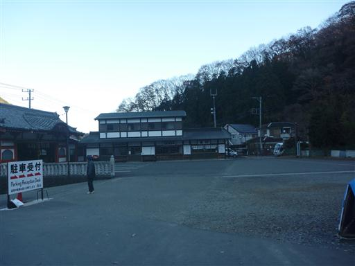
ケーブルカーの駅まで歩いていく。今回はケーブルカーには乗らず歩いて山頂まで行く予定だ。
娘は歩く気が全くなく、駐車場からずっとキャリアに乗っている。
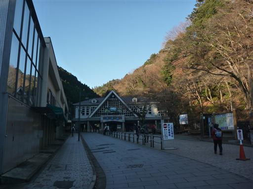
ケーブルカーの駅から左にそれて車道を歩いていく。
こちらの道もそこそこ人通りがある。
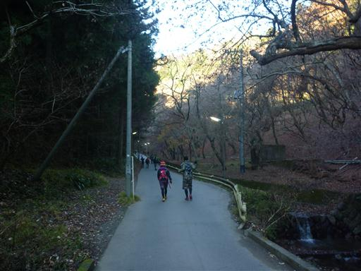
6号路登山口に到着。この道は2010年8月に一度歩いている。
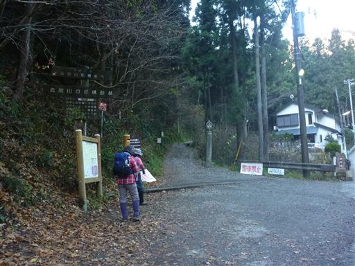
琵琶滝不動堂に到着。沢沿いの道で日が差さず、この辺りは結構寒い。
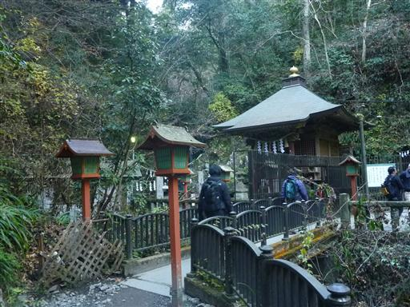
奥に琵琶滝が見られる。恐らく人口の滝だろう。
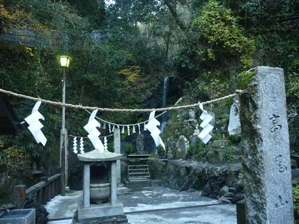
前回はこのまま6号路を高尾山まで歩いたが、今回は琵琶滝から2号路方面に続く道を選択する。
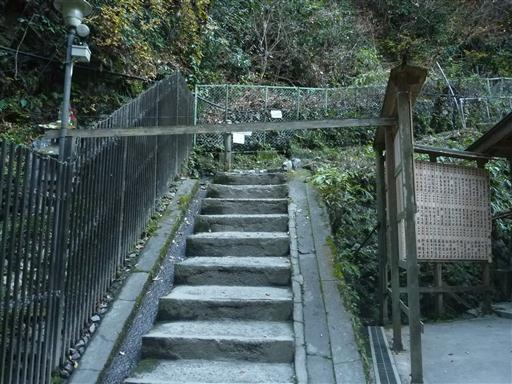
沢沿いの道から尾根近くまで一気に標高を上げていく。
案内板には難易度の高い道と記載されていたが、人通りも多く特に通過が困難な場所はない。
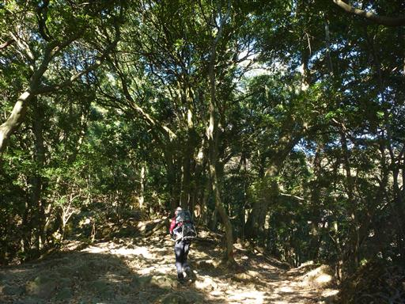
2号路に合流し、3号路に入っていく。
1号路は尾根道、3号路は尾根の南斜面、4号路は尾根の北斜面に付けられている。
以前、娘と二人で歩いた道は4号路で、今回の道とは尾根を挟んだ反対側だ。
この道にはあちらこちらに、そこそこ大きな木が見られる。

辺りは濃い緑に包まれている。
北斜面と南斜面では気温が違うため、植生も異なっているらしい。
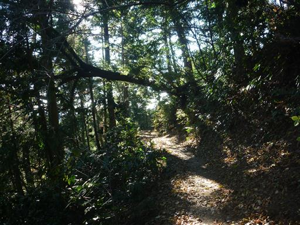
大きな木の根っこが登山道に張り出している。
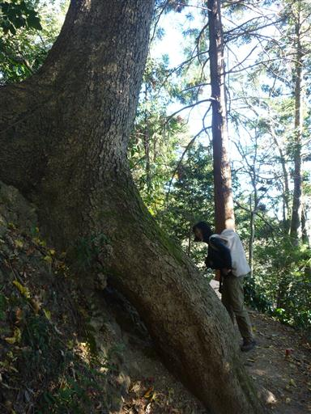
人が入れそうなほど大きな穴の開いた木。
子供が喜びそうな場所なのだが、娘はキャリアの上でうとうとしている。
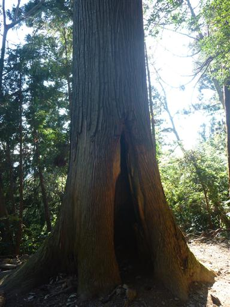
視界が開けて東京都心方面が望める。スカイツリーが一際目立っている。
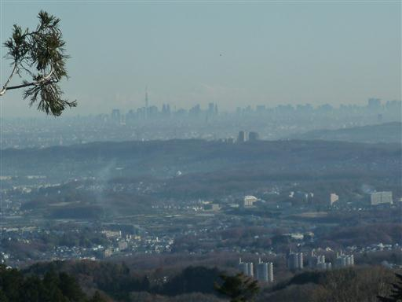
12月ももう半ばだが、一本のモミジの木が真っ赤に紅葉している。
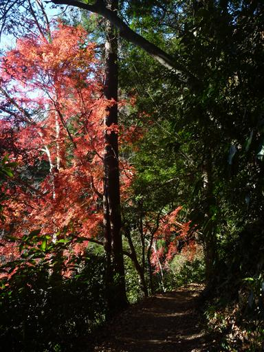
シモバシラ。三頭山で見たのと同じ植物だ。
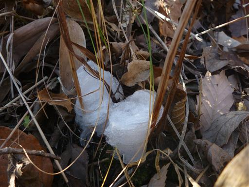
高尾山頂に到着。標高599m。
娘はとうとう一歩も歩かなかった。
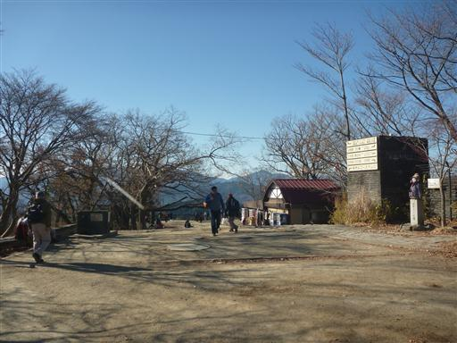
南の方には相模湾が光を反射している。
高尾山から海が見えるとは知らなかった。
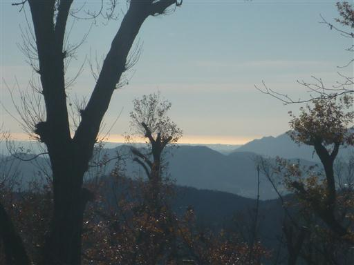
山頂からは富士山が望める。
案外高尾山から富士山が見えることは少ないのだが、今日ははっきり見えている。
左手の立派な山は丹沢の大室山だ。
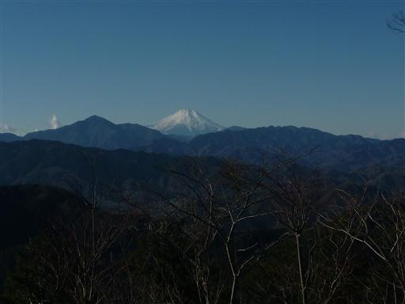
山頂でおにぎりを食べたのだが、全く歩いていない娘が寒くて震えていたので、
仕方なく売店に逃げ込んでおでんを注文する。体が少し温まる。
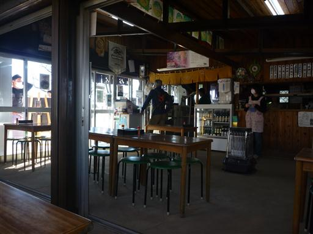
体が温まったら下山開始。一号路からケーブルカーに乗って帰る予定だったが、
娘を歩かせるため、一番南の稲荷山コースを下ることにする。
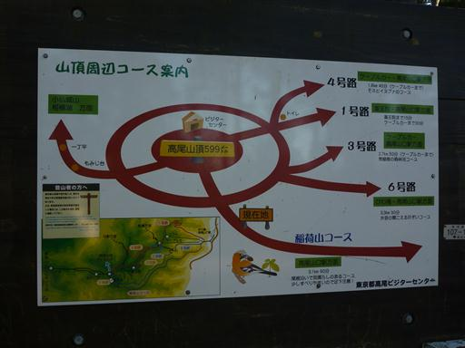
歩きやすい広い尾根道をゆっくり下って行く。ようやく娘も歩く気になったようだ。

ものすごい数の団体登山者。ツアーか何かだろう。
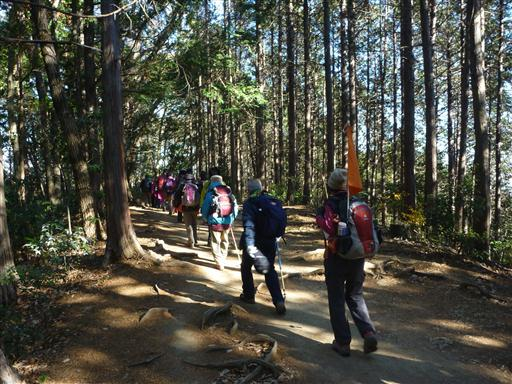
稲荷山の展望台に到着。少し休んだら歩き出す。
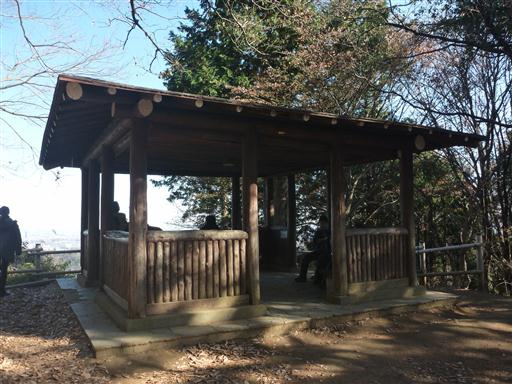
旭稲荷。少し頭の欠けたキツネの狛犬がある。
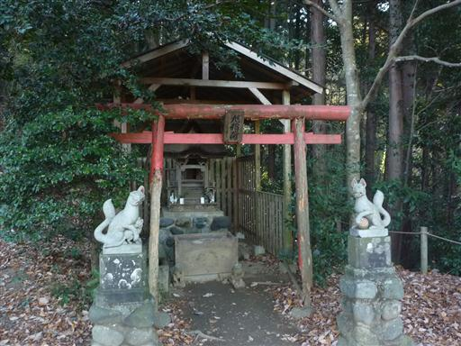
ケーブルカー駅に無事下山してくる。時間はかかったが娘は最後まで自分の足で下ってくれた。
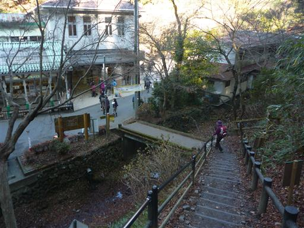
飲食店の屋根を柿の木が貫いている。柿が落ちて屋根が汚れないのだろうか…？
土産物屋を横目で見ながら駐車場まで歩いていく。
なかなか娘が歩いてくれず、頭を悩ます登山だった。
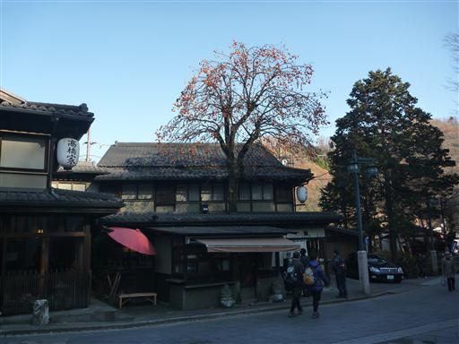